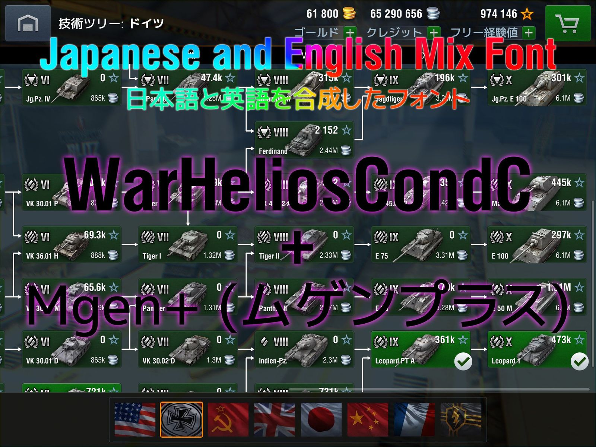

Japanese and English Mix Font
Creator
Mod Information
- ID: sys.font.ja_en_mix
- Description: Japanese and English mix font. You can see Japanese characters in English setting, and you can also see better quality English characters in Japanese setting.
SIL Open Font License (OFL) http://scripts.sil.org/OFL
Copyright
(C) 2002-2013 M+ FONTS PROJECT
Copyright (C) 2009–2016 Wargaming.net
All rights reserved.
